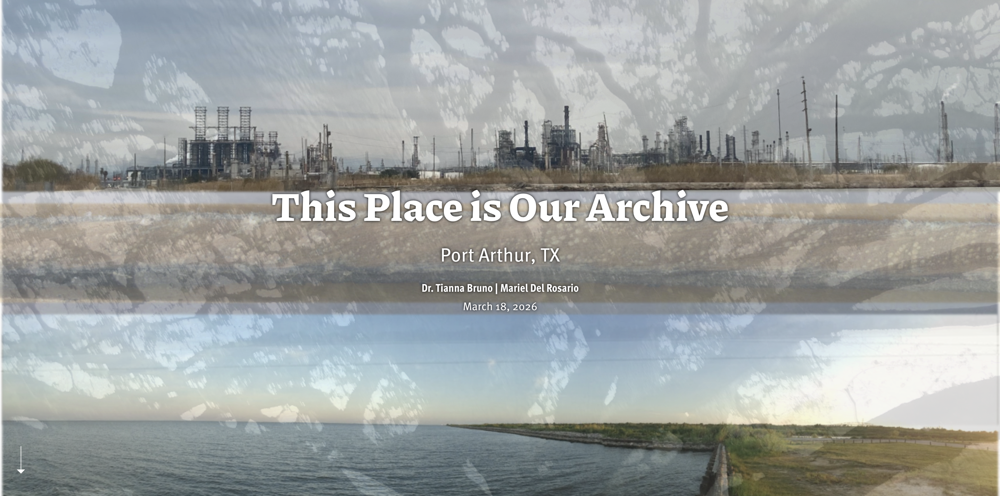
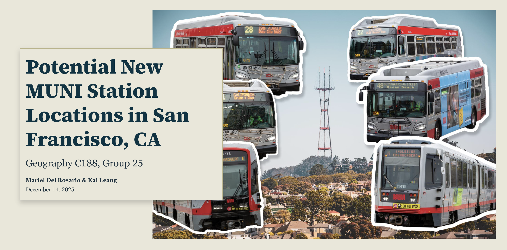
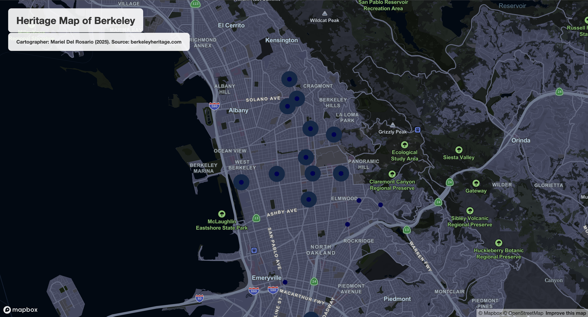

Featured Projects

UC Berkeley Research: This Place is Our Archive
A research project preserving the historically Black environmental justice community of Port Arthur, Texas, by mapping its past and present.
View StoryMap
Potential New MUNI Station Locations in San Francisco, CA
An interactive storymap exploring ideal MUNI (bus) station locations in San Francisco using a multi-criteria suitability analysis.
View StoryMap
Berkeley Heritage Sites
A web mapping application built to visualize historic sites in Berkeley, CA.
Open Interactive Map
Native American Health Equity in Riverside County, CA
Project exploring the health disparity that Native Americans in Riverside County, CA, experience.
View Details